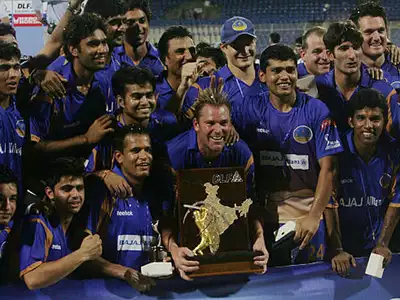

Shane Warne
Role: Right-arm Leg Spin Bowler
Bio: Widely regarded as one of the greatest leg-spinners of all time, Shane Warne revolutionized spin bowling with his mastery of drift, flight, and sharp turn. Known for his strategic genius on the field, Warne was instrumental in Australia's dominance throughout the 1990s and 2000s.
Career Stats
| Format | Matches | Innings | Wickets | Best Bowling | Average | Economy | Strike Rate | 5-wicket Hauls | 10-wicket Hauls |
|---|---|---|---|---|---|---|---|---|---|
| Test | 145 | 273 | 708 | 8/71 | 25.41 | 2.65 | 57.4 | 37 | 10 |
| ODI | 194 | 191 | 293 | 5/33 | 25.73 | 4.25 | 36.3 | 1 | 0 |
| T20 | 73 | 73 | 70 | 4/21 | 25.38 | 6.39 | 23.8 | 0 | 0 |
Memorable Moments

The iconic 'Ball of the Century' delivered to Mike Gatting in 1993, a legendary moment that symbolized Warne's magic with the ball.
Leading Rajasthan Royals to victory in the inaugural IPL season in 2008, showcasing his brilliance even in T20 cricket.